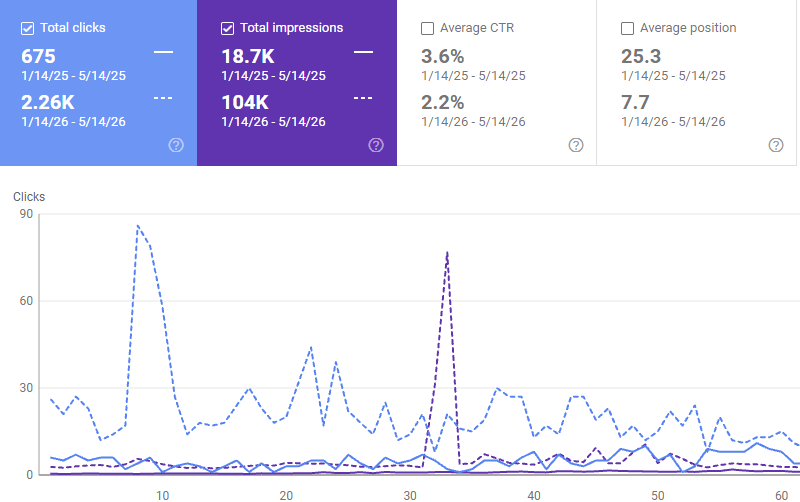

Utica Creative Reuse Center
+235% clicks · +456% impressions · Position 25.3 to 7.7
A Central New York 501(c)3 with no prior SEO infrastructure. No tracking, crawl errors throughout, pages not indexed. I ran the audit, fixed what was blocking them, and built the reporting foundation from scratch.
Read the Case Study